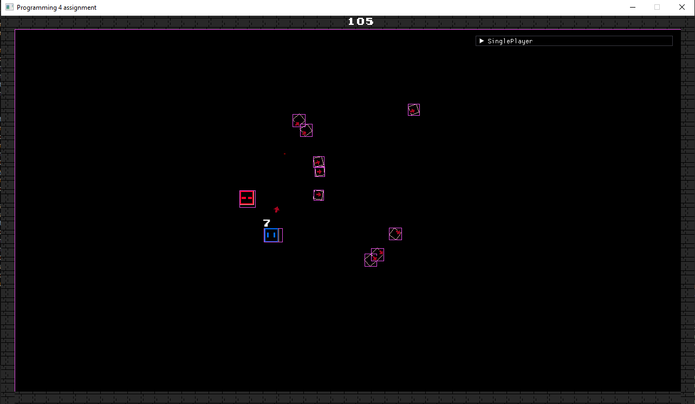

My Portfolio

GOAP
A little Research project that i did during the gameplay programming course into the design of a Goal oriented action planning AI

Motor-3D
A 3D engine that i work on in my spare time powered by Directx and win32

Mold Mart
Mold mart is a small game i made with 5 other people during the Crea week game jam

Hotline Miami
A recreation of Hotline Miami during the Programming 1 course using SDL2

Motor-2D
A simple game made with my 2D engine.